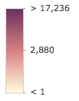
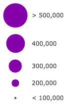
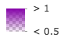

ClassBreaksRenderer defines the symbol of each feature in a Layer based on the value of a numeric attribute. Symbols are assigned based on classes or ranges of data. Each feature is assigned a symbol based on the class break in which the value of the attribute falls.
Supported layers
ClassBreaksRenderer may only be used to create visualizations for the following layer types:
A numeric attribute field from which to define the class breaks must be specified. Each break and its associated symbol must also be defined using the addClassBreakInfo() method or the classBreakInfos property in the constructor.
In the example below a FeatureLayer representing block groups is rendered with a ClassBreaksRenderer. Features where fewer than 35% of the population have a college degree are rendered with a deep green color. Features where between 35% and 50% of the population have a college degree are rendered with a pale green symbol. The other features are similarly rendered based on the value of the attribute of interest.
var renderer = new ClassBreaksRenderer({
// attribute of interest - Earthquake magnitude
field: "MAGNITUDE"
});
// All features with magnitude between 0 - 4.0
renderer.addClassBreakInfo({
minValue: 0,
maxValue: 4.0,
symbol: new PointSymbol3D({
symbolLayers: [new ObjectSymbol3DLayer({
resource: { primitive: "cone" },
material: { color: [0, 169, 230] },
height: 200000,
width: 50000
})]
})
});
// All features with magnitude between 4.1 - 7.0
renderer.addClassBreakInfo({
minValue: 4.1,
maxValue: 7.0,
symbol: new PointSymbol3D({
symbolLayers: [new ObjectSymbol3DLayer({
resource: { primitive: "cone" },
material: { color: [230, 230, 0] },
height: 800000,
width: 90000
})]
})
});
// All features with magnitude between 7.1 - 10.0
renderer.addClassBreakInfo({
minValue: 7.1,
maxValue: 10.0,
symbol: new PointSymbol3D({
symbolLayers: [new ObjectSymbol3DLayer({
resource: { primitive: "cone" },
material: { color: [230, 0, 0] },
height: 3200000,
width: 130000
})]
})
});
var layer = new FeatureLayer({
url: "http://url.to.service",
renderer: renderer
});Constructors
new ClassBreaksRenderer(properties)
properties Object See the properties for a list of all the properties that may be passed into the constructor. |
// Typical usage
var renderer = new ClassBreaksRenderer({
field: "fieldName",
classBreakInfos: [ ... ]
});Property Overview
| Name | Type | Summary | |
|---|---|---|---|
| AuthoringInfo | Authoring metadata only included in renderers generated from one of the Smart Mapping creator methods, such as sizeRendererCreator.createContinuousRenderer() or colorRendererCreator.createContinuousRenderer(). more details | more details | |
| FillSymbol | When symbolizing polygon features with graduated symbols, set a FillSymbol on this property to visualize the boundaries of each feature. more details | more details | |
| Object[] | Each element in the array is an object that provides information about a class break associated with the renderer. more details | more details | |
| String | The name of the class. more details | more details | |
| Symbol | The default symbol assigned to features with a value not matched to a given break. more details | more details | |
| String | Function | The name of the attribute field the renderer uses to render data. more details | more details | |
| Boolean | If | more details | |
| Object | An object providing options for displaying the renderer in the Legend. more details | more details | |
| String | When normalizationType is | more details | |
| Number | When normalizationType is | more details | |
| String | Indicates how the data is normalized. more details | more details | |
| String | The type of renderer. more details | more details | |
| String | An Arcade expression evaluating to a number. more details | more details | |
| String | The title identifying and describing the associated Arcade expression as defined in the valueExpression property. more details | more details | |
| Object[] | Visual variables define the parameters for data-driven geographic visualizations of numeric data. more details | more details | |
Property Details
authoringInfo
Authoring metadata only included in renderers generated from one of the Smart Mapping creator methods, such as sizeRendererCreator.createContinuousRenderer() or colorRendererCreator.createContinuousRenderer(). This includes information from UI elements such as sliders and selected classification methods and themes. This allows the authoring clients to save specific overridable settings so that next time it is accessed via the UI, their selections can be remembered.
backgroundFillSymbolFillSymbol
When symbolizing polygon features with graduated symbols, set a FillSymbol on this property to visualize the boundaries of each feature. Use a FillSymbol of varying sizes in the classBreakInfos to indicate the quantity.
classBreakInfosObject[]
Each element in the array is an object that provides information about a class break associated with the renderer. Each object has the following specification:
Example:var renderer = new ClassBreaksRenderer({ field: "HARVESTED_ACRES", classBreakInfos: [ { minValue: 0, // 0 acres maxValue: 200000, // 200,000 acres symbol: sym1, // will be assigned sym1 label: "fewer than 200,000 acres" }, { minValue: 200001, // 200,001 acres maxValue: 500000, // 500,000 acres symbol: sym2, // will be assigned sym2 label: "200,000 - 500,000 acres" }, { minValue: 500001, // 500,001 acres maxValue: 750000, // 750,000 acres symbol: sym3, // will be assigned sym2 label: "more than 500,000 acres" } ] });declaredClassStringreadonly
The name of the class. The declared class name is formatted as
esri.folder.className.defaultSymbolSymbol
The default symbol assigned to features with a value not matched to a given break. If
null, unmatched features will not be assigned a symbol.Known Limitations
SceneLayers with a
meshgeometryType will display unmatching features with a generic symbol even if thedefaultSymbolisnull.The name of the attribute field the renderer uses to render data. A function may also be used to return a numeric value if the data does not already explicitly exist in a field.
Example:// function used to return total crop harvest within each feature // field for this use case (total crop harvest in acres) doesn't exist function calculateTotalAcres(feature){ // a number field representing total wheat harvest in acres var wheat = feature.attributes.WHEAT_ACRES; // a number field representing total cotton harvest in acres var cotton = feature.attributes.COTTON_ACRES; // a number field representing total soybeans harvest in acres var soybeans = feature.attributes.SOYBEANS_ACRES; // a number field representing total corn harvest in acres var corn = feature.attributes.CORN_ACRES; // a number field representing total vegetables harvest in acres var vegetables = feature.attributes.VEGETABLES_ACRES; // var used to add up total harvestable acres var totalHarvest = wheat + cotton + soybeans + corn + vegetables; return totalHarvest; } var renderer = new ClassBreaksRenderer({ field: calculateTotalAcres, // values returned by this function will // be used to render features classBreakInfos: [ { minValue: 0, // 0 acres maxValue: 200000, // 200,000 acres symbol: sym1 // will be assigned sym1 }, { minValue: 200001, // 200,001 acres maxValue: 500000, // 500,000 acres symbol: sym2 // will be assigned sym2 }, { minValue: 500001, // 500,001 acres maxValue: 750000, // 750,000 acres symbol: sym3 // will be assigned sym2 } ] });isMaxInclusiveBoolean
If
true, graphics with attribute values equal to the max value of a class will be included in that class. Set this property tofalseif the desired behavior is to make a class include values less than, but not equal to the max value.Default Value: truelegendOptionsObject
An object providing options for displaying the renderer in the Legend.
Property:title StringDescribes the variable driving the visualization. This is displayed as the title of the corresponding renderer in the Legend and takes precedence over a field alias or valueExpressionTitle.
Example:renderer.legendOptions = { title: "Population density" };normalizationFieldString
When normalizationType is
field, this property contains the attribute field name used for normalization.normalizationTotalNumber
When normalizationType is
percent-of-total, this property contains the total of all data values.normalizationTypeString
Indicates how the data is normalized. If this property is defined, then the class breaks contain a normalized min/max value instead of the value in the given field. The data value obtained from the field is normalized in one of the following ways before it is compared with the class breaks. See the table below for a list of possible values.
Possible Value Description field Divides the data value using the attribute value of the field specified in the normalizationField property. This value is set by default if the normalizationField is provided. log Computes the base 10 logarithm of the data value. This can be a useful approach for some data distributions because it reduces the influence of very large data values. percent-of-total Divides the data value by the sum of all data values then multiplies by 100. Use normalizationTotal to define the total value by which to normalize. This value is set by default if the normalizationTotal is provided. With the exception of
lognormalization, data normalization creates a ratio by dividing two values. When comparing attribute values between features, normalization minimizes the effect of varying map areas and the number of observations.For example, dividing the 18 to 30 year old population by the area of a polygon feature yields a density value that can be compared evenly with other features, regardless of their size.
typeStringreadonly
The type of renderer. For ClassBreaksRenderer this value is always
classBreaks.valueExpressionString
An Arcade expression evaluating to a number. This expression can reference field values using the
$featureglobal variable and perform mathematical calculations and logical evaluations at runtime. Field names referenced in Arcade expressions must be included in the outFields property of the layer.This property is typically used as an alternative to field for data-driven visualizations.
Example:// expression calculating voter turnout based on two field values var renderer = new ClassBreaksRenderer({ valueExpression: "( $feature.TOT_VOTES / $feature.REG_VOTERS ) * 100", classBreakInfos: [ ... ], // assigns symbols to manual class breaks // e.g. 0-20, 20-40, 40-60, 60-80, 80-100 });valueExpressionTitleString
The title identifying and describing the associated Arcade expression as defined in the valueExpression property. This is displayed as the title of the corresponding renderer in the Legend in the absence of a provided
titlein the legendOptions property.Example:renderer.valueExpression = "$feature.POP / $feature.SQ_MI * 100"; renderer.valueExpressionTitle = "Population per square mile";visualVariablesObject[]
Visual variables define the parameters for data-driven geographic visualizations of numeric data. They allow you to easily map continuous ramps of color, size, opacity, and/or rotation to minimum and maximum data values of one of the layer's numeric attribute fields.
Visual variables can primarily be used in two ways.
1. Thematic mapping
Visual variables allow you to easily create stunning visualizations based on thematic attributes (e.g. population, education, rank, money, magnitude, etc.) in either 2D or 3D. This is accomplished by mapping data values from a numeric field attribute to color, size, and/or opacity values. The renderer then takes over and re-sizes or shades features based on the value of the given field and its position relative to the minimum and maximum values. The sample below uses three visual variables (size, color, and opacity).
2. Mapping real-world sizes
The size visual variable can be used to visualize the true sizes of features (e.g. tree canopy, road width, building height, etc.) based on their size in the real world. This can be particularly powerful when working in a 3D SceneView. The image below shows a layer of building footprints that uses visual variables to extrude each feature to the true height of the buildings based on data stored in an attribute field.

The
visualVariablesproperty of the renderer is an array of objects called "visual variables". Each object must indicate the type of visual variable to apply (e.g. color, size, opacity, rotation), the numeric field from which to drive the visualization, and the ramp of visual values to map to the data. The following list identifies each visual variable type and provides a link to the specification table of each.Type Object Specification Legend Example color ColorVisualVariable  size SizeVisualVariable  opacity OpacityVisualVariable  rotation RotationVisualVariable - See the Visualize features with realistic 3D symbols for an example of using multiple visual variables to visualize your data.
Method Overview
| Name | Return Type | Summary | |
|---|---|---|---|
Adds a class break to the renderer. more details | more details | ||
| ClassBreaksRenderer | Creates a deep clone of the renderer. more details | more details | |
| * | Creates a new instance of this class and initializes it with values from a JSON object generated from a product in the ArcGIS platform. more details | more details | |
| Object | Returns the classBreakInfo information (as defined by the renderer) associated with the given graphic. more details | more details | |
Removes a break from the renderer. more details | more details | ||
| Object | Converts an instance of this class to its ArcGIS Portal JSON representation. more details | more details | |
Method Details
addClassBreakInfo(min, max, symbol)
Adds a class break to the renderer. You can provide the minimum, maximum and symbol values as individual arguments or by using the info object. The range of the break is greater than or equal to the minimum value and less than the maximum value.
Parameters:The minimum value to use in the break. This can be a number or an info object as defined in classBreakInfos.
max NumberThe maximum value to use in the break.
symbol SymbolSymbol to use for the break.
Examples:// add a class break using an info object renderer.addClassBreakInfo({ minValue: 0, // lower limit of the break maxValue: 2, // upper limit of the break symbol: symbol1 // the symbol assigned to features in this break });// add a class break using arguments renderer.addClassBreakInfo(2, 4, symbol2); // Features with values between 2 - 4 will be assigned symbol2 });clone(){ClassBreaksRenderer}
Creates a deep clone of the renderer.
Returns:Type Description ClassBreaksRenderer A deep clone of the object that invoked this method. Example:// Creates a deep clone of the first layer's renderer var renderer = view.map.layers.getItemAt(0).renderer.clone();fromJSON(json){*}static
Creates a new instance of this class and initializes it with values from a JSON object generated from a product in the ArcGIS platform. The object passed into the input
jsonparameter often comes from a response to a query operation in the REST API or a toJSON() method from another ArcGIS product. See the Using fromJSON() topic in the Guide for details and examples of when and how to use this function.Parameter:json ObjectA JSON representation of the instance in the ArcGIS format. See the ArcGIS REST API documentation for examples of the structure of various input JSON objects.
Returns:Type Description * Returns a new instance of this class. getClassBreakInfo(graphic){Object}
Returns the classBreakInfo information (as defined by the renderer) associated with the given graphic.
Parameter:graphic GraphicThe graphic whose rendering information will be returned.
Returns:Type Description Object Returns an object containing rendering and legend information for the break associated with the graphic. removeClassBreakInfo(min, max)
Removes a break from the renderer.
Parameters:min NumberMinimum value in the break to remove
max NumberMaximum value in the break to remove.
Example:// removes the break defined for values between 2 - 4. renderer.removeClassBreakInfo(2,4);Converts an instance of this class to its ArcGIS Portal JSON representation. See the Using fromJSON() topic in the Guide for more information.
Returns:Type Description Object The ArcGIS Portal JSON representation of an instance of this class.